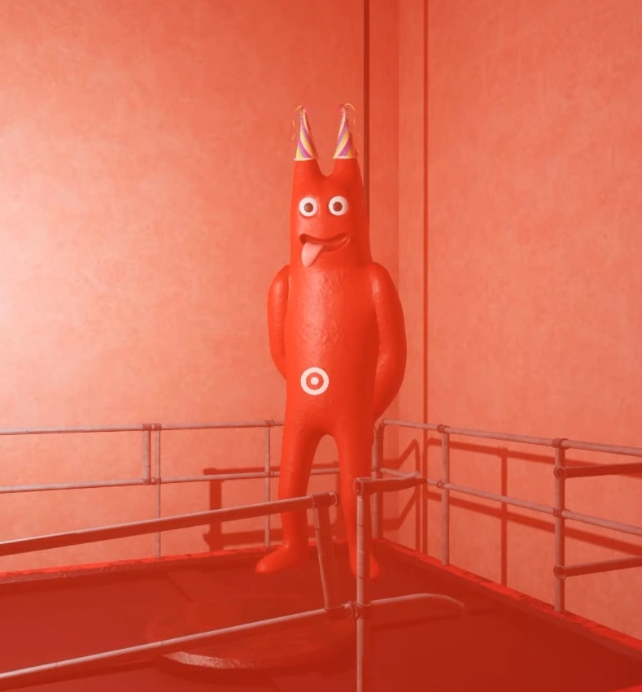
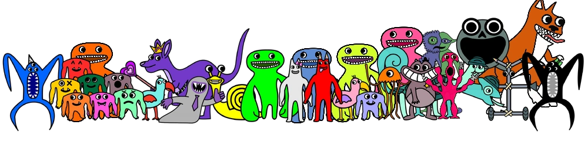

The Lore!
Unlike most horror games, Garten of BanBan doesn’t have a plot that’s super gorey or inappropriate. There’s no large amounts of blood, no death- there’s only one character who is assumed dead, and this includes characters who by all logic should be dead. There’s no extreme use of violence, or anything like that. No, the issue with the plot of Garten of BanBan is that it is weird.
The games started off at a normal scene- at least for the indie horror scene. Childhood trauma, mascots control the place they represent, the works. Parents trying to find their missing kid. This continued through to Chapter Three, when things started to get a bit weird. Stinger Flynn transports you to “The Beach”- in his mindscape -where he reveals he wants to become a brainless jellyfish and to do so wants to use the kids as donors. You refuse to do so, he then sets Demon BanBan on you, which leads to Jumbo Josh stopping him and Stinger Flynn breaking up BanBan and Jumbo Josh as well. You escape down the elevator and go to the kingdom.
Then in Chapter Four, you go down to the kingdom where you meet Sheriff Toadster, who takes you to Queen Bouncelia, who is hiding from the jester Bittergiggle because if she laughs she will release the Naughty Ones, who are trapped in her pouch. You and the Sheriff go to repair the elevator that will take you back up, Bittergiggle attacks and makes the Queen laugh. This leads to Chapter Six, where the player is forced to fight Sir Dadadoo to defeat him and escape before the Naughty versions of their mutant friends attack them. The current standing ends with the player once again going down the elevator.
That is the short version of everything, with the even more complicated bits taken out. So while the game is fun to play, don’t get too invested in the lore of the game if you don’t want your head to hurt!
Check It Out!
Want to explore more of the games? Check out these pages!
